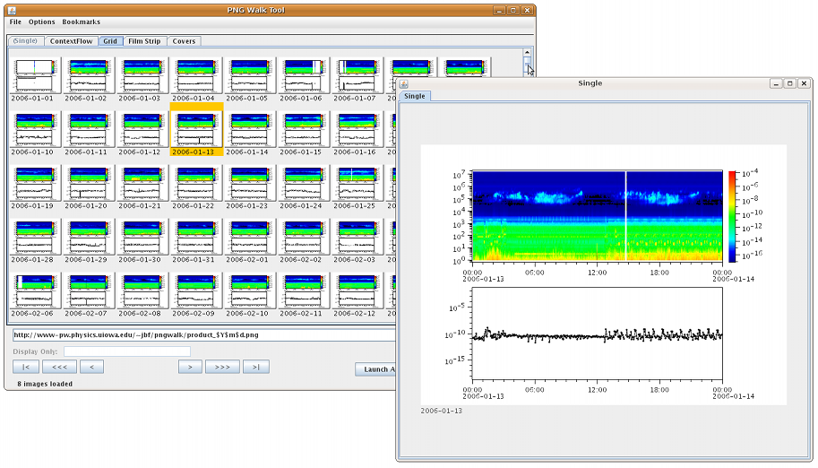

Autoplot Application (#{tag}) (update 1)


New PNGWalk Tool uses Tearoff Tabbed Pane to provide flexible views
of PNG walks.
Autoplot attempts to allow plotting of data from many data sources, including local files and OpenDAP servers.
Datasets are identified with URLs, and by the URL's extension a module is used to load the data into the internal data model. Data is then
displayed by guessing the rendering method and axis ranges to provide a reasonable, useful view of the data.
This development release is an untagged version with experimental features.
Recent changes include:
- Updates:
- command key used on mac (e.g. command-Z), instead of control.
- various bugfixes.
- QDataSet interface gets experimental native (implementation-specific) slice and trim operations.
- New PNG Walk Tool that is more flexible and improves the user interface.
- scrollbars used to provide more usable control.
- simple, serviceable views composed to make complex displays
- tear off tabbed pane used to support wide displays, e.g. grid + single
- missing sequence images indicated.
- experimental problem/okay buttons allow images to be annotated.
- pre-computed thumbnail support.
- bookmarks and recent entries
- QDataSet histogram peaks analysis, gcd.
- QStream ascii format evaluates resolution needed for time tag output.
- AsciiDataSource and Excel panel editors made more intuitive.
- AsciiDataSource rejects URIs that don't specify column when there are more than two columns.
- reduce confusion when user points to ascii file, use the editor GUI instead of plotting first column (often just the year).
- Aggregating
- editor panel (at the bottom) lists remote site to provide year, month, day droplists of available data.
- file browsers allow multiple files to be selected, and aggregation URI is result.
- file system completion presents aggregation options when aggregations are detected.
- Introduce experimental vap format that uses new serializer
- improves serviceability of this serialization, Java Beans serialization is too opaque
- decouples vap from DOM to support forward-compatibility of vap files.
- more explicit yet hackable
- save to vap will create ".vapx" which is the new format.
- .vap and .vapx can contain either xml scheme.
- leverage QStream serialization so that one serialization type is used.
- miscellaneous bugfixes and gui improvements for example:
- automatic slice of rank 3 slices the middle of each dimension, where there is more likely to be valid data.
- remove properties buttons from style tab that were left over from the old gui.
Known issues:
- HugeScatter renderer needs to have the envelope (column min to max) painted to avoid Moire patterns.
- last URI is not added to DataSetSelector.
- PNGWalk tool doesn't repaint when subrange is changed
- AsciiTableDataSource sometimes identifies data as column headers
This completes the feature set for the new production branch. No major features will be added before branching this version. A production branch will be started in a couple of weeks, and the "Start Autoplot" link at the top of www.autoplot.org will run this version. Feedback on the function and quality of this release is greatly appreciated!
data is input from:
ASCII files (.dat,.txt)
binary files (.bin)
Excel spread sheets (.xls)
das2Streams (.d2s or .das2Stream)
QStreams (.qds), QDataSet on a das2Stream
netcdf files (.nc,.ncml)
HDF5 files
cdf files(.cdf)
dods servers (.dds)
Cluster Exchange Format files (.cef)
Fits Format Files
ViRBO's TSDS server
Plasma Wave Group das2 Server
Images (.jpg, .png, .gif)
Wav audio files
This is not complete, and limitations include:
Quantities of rank 3 dimensionality (e.g. flux(Time,Energy,pitch) are plotted by slicing.
Quantities of rank 4 dimensionality (e.g. flux(Time,Energy,azimuth,sector) are plotted by slicing.
autoplot.org is the wiki website, and contains
more information than this launch page.